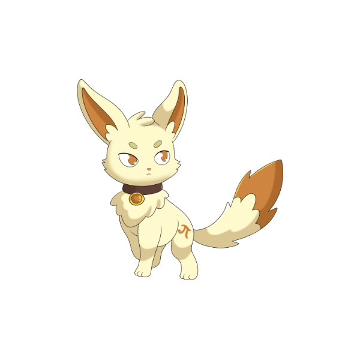
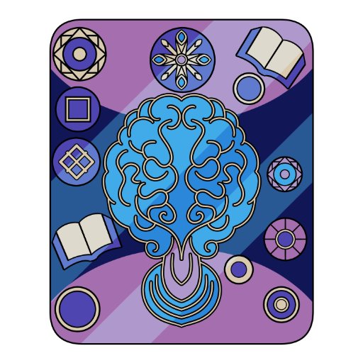
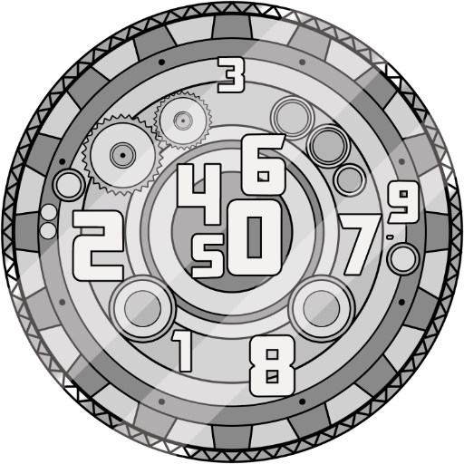

MERCURIO
Differenze nell'Apprendimento
Il pensiero segue rotte inedite.
GLI ABITANTI DEL MIO MERCURIO

Silen
La forma di Silen che segue le rotte inedite del pensiero.
Silen è la specie ancestrale da cui discendono tutti i visitatori del nostro universo. Nella sua forma mercuriana incarna il pensiero che non segue le strade già battute: le lettere che danzano, i numeri che sfuggono, i gesti che cercano il loro tempo. Un percorso dedicato a chi impara in modo diverso, e che trova proprio in quella diversità una forma nuova di intelligenza.OGNI LUNA UNA ROTTA INEDITA
Ogni luna di Mercurio racconta un modo diverso di incontrare parole, numeri e gesti.
Esplora le schede dedicate alle differenze nell'apprendimento e scopri la rotta che parla di te.
Ogni scheda ha due voci: Cos'è spiega il tema con parole chiare, La luna racconta lo attraversa con la voce del progetto. Sono testi divulgativi: non sostituiscono il parere di un professionista — le storie, vere e proprie, stanno nei libri.
Dislessia
Le lettere danzano e insegnano un'altra rotta.
La dislessia è una difficoltà specifica nell'apprendimento della lettura: decodificare le parole diventa lento e faticoso. Non dipende dall'intelligenza né da pigrizia — con gli strumenti giusti, come testi ad alta leggibilità e tempi adeguati, si studia e si lavora senza penalizzazioni.
Disprassia
Il corpo impara il suo passo.
La disprassia, o disturbo della coordinazione motoria, rende difficoltosi la pianificazione e l'esecuzione dei movimenti: allacciarsi le scarpe, scrivere in modo fluido, organizzare i gesti. Riguarda la coordinazione, non l'intelligenza, e si accompagna con riabilitazione e adattamenti pratici.

Iperlessia
Le parole arrivano prima del loro significato.
L'iperlessia è una capacità di lettura precoce e spontanea, spesso ben oltre l'età anagrafica. Non è un disturbo: è una traiettoria di sviluppo atipica che, isolata, può talvolta nascondere difficoltà nella comprensione o in altre aree dell'apprendimento.

Discalculia
I numeri sono una lingua straniera.
La discalculia è una difficoltà specifica con i numeri e il calcolo: capire le quantità, memorizzare le tabellari, incolonnare un'operazione. Come le altre difficoltà specifiche dell'apprendimento, non misura l'intelligenza e si affronta con metodi didattici mirati.
Disgrafia
La mano cerca la sua forma.
La disgrafia è una difficoltà nella scrittura del segno grafico: lettere irregolari, pressione ineguale, un testo faticoso da leggere. Non è disattenzione: riguarda la motricità fine e l'organizzazione del gesto, e oggi si accompagna anche con strumenti digitali.
Disortografia
Le parole cercano la propria via sulla carta.
La disortografia è la difficoltà ad applicare correttamente le regole ortografiche: accenti, doppie, suoni simili che si confondono. Riguarda la scrittura codificata, non la ricchezza delle idee, e si interviene con esercizi specifici e tempi più lunghi.
INFORMAZIONI E LICENZE
Le opere esposte sono tutelate da diritto d'autore. Per collaborazioni, richieste professionali o per consultare il catalogo delle licenze autorizzate, puoi trovarmi qui:
Iscriviti alla nostra mailing list
Novità su libri, storie e nuove lune: qualche email, mai di più.
Se il modulo qui sopra non funziona, apri l'iscrizione in una nuova scheda
Ogni riproduzione non autorizzata è vietata.